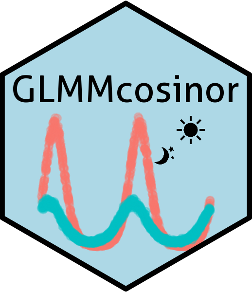

Test for differences in a cosinor model between components.
Source:R/test_cosinor.R
test_cosinor_components.RdGiven a time variable and optional covariates, generate inference a cosinor fit. For the covariate named (or vector of covariates), this function performs a Wald test comparing the group with covariates equal to 1 to the group with covariates equal to 0. This may not be the desired result for continuous covariates.
Usage
test_cosinor_components(
x,
x_str = NULL,
param = "amp",
comparison_A = 1,
comparison_B = 2,
level_index = 0,
ci_level = 0.95
)Arguments
- x
A
cglmmobject.- x_str
A
character. The name of the grouping variable within which differences in the selected cosinor characteristic (amplitude or acrophase) will be tested. If there is no grouping variable in the model, then this can be left as NULL (default).- param
A
character. Either"amp"or"acr"for testing differences in amplitude or acrophase, respectively.- comparison_A
An
integer. Refers to the component number that is to act as the reference group. for the comparison.- comparison_B
An
integer. Refers to the component number that is to act as the comparator group- level_index
An
integer. Ifcomparison_type = "components",level_indexindicates which level of the grouping variable is being used for the comparison between components.- ci_level
The level for calculated confidence intervals. Defaults to
0.95.
Examples
data_2_component <- simulate_cosinor(
n = 10000,
mesor = 5,
amp = c(2, 5),
acro = c(0, pi),
beta.mesor = 4,
beta.amp = c(3, 4),
beta.acro = c(0, pi / 2),
family = "gaussian",
n_components = 2,
period = c(10, 12),
beta.group = TRUE
)
mod_2_component <- cglmm(
Y ~ group + amp_acro(times,
n_components = 2, group = "group",
period = c(10, 12)
),
data = data_2_component
)
test_cosinor_components(mod_2_component, param = "amp", x_str = "group")
#> Test Details:
#> Parameter being tested:
#> Amplitude
#>
#> Comparison type:
#> components
#>
#> Component indices used for comparison between groups: group
#> Reference component: 1
#> Comparator component: 2
#>
#>
#> Global test:
#> Statistic:
#> 8885.55
#>
#> P-value:
#> 0
#>
#>
#> Individual tests:
#> Statistic:
#> 94.26
#>
#> P-value:
#> 0
#>
#> Estimate and 95% confidence interval:
#> 2.95 (2.89 to 3.01)